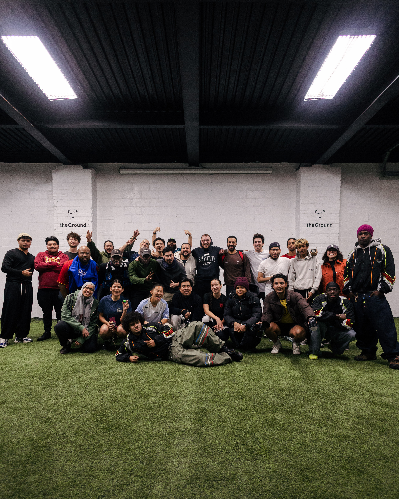

Residency

A Wednesday night 2-hour pickup at theGround to bring the community out during the cold, dark months.

The World's City, The World's Game.
TÁCTICO 90 is an interdisciplinary studio documenting and celebrating fútbol culture in New York City. We spotlight the city's rich soccer history through photography, video, event planning, and digital tools.
A Wednesday night 2-hour pickup at theGround to bring the community out during the cold, dark months.
The first-of-its-kind one-day futbol tournament and block party.
Documenting the fútbol diasporas in New York fandoms far from home.
Early coverage of the first shoe release, commissioned to shoot photos for the magazine.
Hosting live watch events for major games, connecting fans and players alike.
Annual holiday initiative collecting and distributing gifts for families in Washington Heights. Benefitting the Juan Pablo Duarte Foundation.